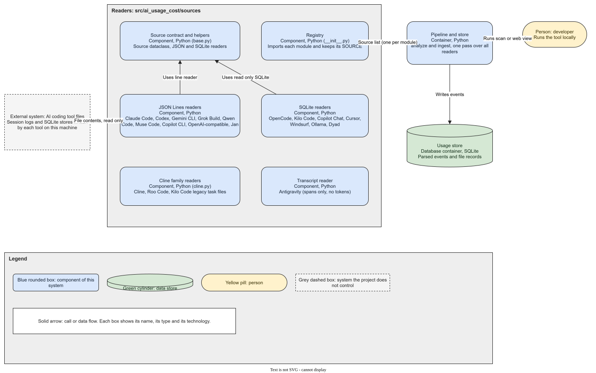

active approved inferred
Readers component view
This view shows how the tool turns the files other AI coding tools leave on a machine into usage events. Every supported tool has its own reader, and all of them follow one shared contract. Adding support for a new tool means adding one module, which keeps the list of supported tools easy to grow and easy to audit.
What the diagram shows
- The registry imports every module in the readers package except the base module and keeps the one
SOURCEeach module defines.src/ai_usage_cost/sources/__init__.py:11-20 - The base module holds the
Sourcecontract and the shared helpers for JSON Lines, SQLite and timestamps.src/ai_usage_cost/sources/base.py:17-40src/ai_usage_cost/sources/base.py:69-176 - JSON Lines readers parse one record per line, for example the Claude Code assistant records with a
usageobject.src/ai_usage_cost/sources/claude_code.py:65-86 - SQLite readers open the tool's database read only through the shared helper, for example Cursor reading
composerData:%keys.src/ai_usage_cost/sources/base.py:117-129src/ai_usage_cost/sources/cursor.py:57-61 - The Cline family readers share one parser for
ui_messages.jsontask files, and Roo Code and Kilo Code legacy only supply their own settings.src/ai_usage_cost/sources/cline.py:139-149src/ai_usage_cost/sources/roo_code.py:9-29 - The Antigravity reader supplies spans only and no token counts.
src/ai_usage_cost/sources/antigravity.py:297-314 - The pipeline asks the registry for the readers and passes them to the store, which writes events and file records.
src/ai_usage_cost/pipeline.py:166-185src/ai_usage_cost/store.py:218-231
Capability and related functionality
Realises the reader layer of Ai usage cost sources Overview. The generated module map is in Ai usage cost sources Diagrams, the data shape is in Ai usage cost sources Data Model, and the flow of one file through a reader is in Readers data flow.
Readers component view

Code references
| Code | What it shows |
|---|---|
src/ai_usage_cost/sources/__init__.py:11-27 |
Registry and client labels |
src/ai_usage_cost/sources/base.py:17-176 |
Source contract and shared helpers |
src/ai_usage_cost/sources/claude_code.py:34-110 |
A JSON Lines reader |
src/ai_usage_cost/sources/cursor.py:17-84 |
A SQLite reader |
src/ai_usage_cost/sources/cline.py:81-149 |
Cline family parser settings and files |
src/ai_usage_cost/sources/antigravity.py:297-314 |
Spans only reader |
src/ai_usage_cost/pipeline.py:166-185 |
Pipeline passing readers to the store |